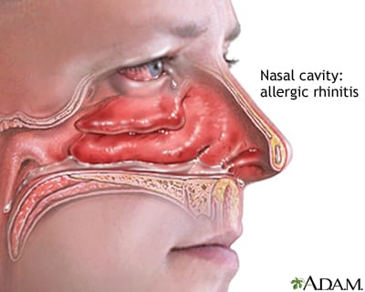

మార్కెట్ చేసినది: జాన్సన్ & జాన్సన్ ప్రైవేట్ లిమిటెడ్
<>
బెనడ్రిల్ సిరప్ యొక్క ప్రయోజనాలు
బెనడ్రిల్ సిరప్ దగ్గుకు చికిత్సలో ఉపయోగించబడుతుంది. ఇది రన్నీ నోస్, ఉలుకలు, నీటి కళ్ల వంటి అలర్జీ లక్షణాల నుంచి ఉపశమనం అందిస్తుంది. ఇది ముక్కు, ట్రాకియా మరియు ఊపిరితిత్తులలో మ్యూకస్ను సన్నని చేస్తుంది, తద్వారా దగ్గు రావడం సులభం అవుతుంది.

అలెర్జీ
తుమ్ములు
ముక్కు కారటం
నీళ్ళు నిండిన కళ్ళు
దగ్గు
బెనడ్రిల్ సిరప్ ఎప్పుడు తీసుకోవాలి
ఇది దగ్గును తగ్గించడానికి మరియు గొంతు మరియు ఊపిరితిత్తుల నుండి మ్యూకస్ను స్వచ్చంగా చేయడంలో సహాయపడుతుంది.
దగ్గును చికిత్స చేయడానికి:
దగ్గు అనేది ఏదో పటిష్టంగా, బలంగా బయటకు నెట్టి వాయువు, ఇది గొంతు లేదా వాయువుల (గొంతులో ముదురు, తెలుపు, ఘన ద్రవ మాదిరి విషయం) లో ఉన్న మ్యూకస్ను తుడిచిపెట్టడానికి సహాయపడుతుంది లేదా వాయువుల ద్వారా శరీరానికి వచ్చిన ధూళి. ఇది కొన్ని రోగాల (అస్మా వంటి) లేదా అలర్జీల వల్ల ఎక్కువగా జరుగుతుంటే, అది అసౌకర్యంగా ఉంటుంది.
బెనడ్రిల్ సిరప్ మందు మందమైన మ్యూకస్ను విడుదల చేయడంలో సహాయపడుతుంది మరియు దాని అంటుకట్టును తగ్గిస్తుంది, దీంతో దగ్గు రావడం సులభం అవుతుంది. దీనితో, వాయువు లోనికి మరియు బయటికీ వెళ్ళడం సులభం అవుతుంది. ఇది నీటి కళ్ల, ఉలుకలు, రన్నీ నోస్ లేదా గొంతు ఫ్లామేషన్ వంటి అలర్జీ లక్షణాలను కూడా ఉపశమనం కలిగిస్తుంది మరియు మీ రోజు రోజుల పనులను సులభంగా నిర్వహించడంలో సహాయపడుతుంది. ఈ మందును తీసుకోవడం వల్ల మీరు మీ లక్షణాలను మరిచిపోకుండా, ఎక్కువగా ఆందోళన చెందకుండా, మీ జీవితాన్ని మరింత స్వేచ్ఛగా గడిపించవచ్చు.
బెనడ్రిల్ సిరప్ ఎలా తీసుకోవాలి
బెనడ్రిల్ సిరప్ యొక్క సరైన మోతాదును మరియు వినియోగాన్ని అనుసరించడానికి ఈ మార్గదర్శకాలను పాటించండి:
మోతాదుల సిఫారసులు:
4-6 సంవత్సరాల పిల్లలకు: అర్ధ స్పూన్ (2.5 మి.లీ)
6-12 సంవత్సరాల పిల్లలకు: ఒక స్పూన్ (5 మి.లీ)
వయోస్కులు (12 సంవత్సరాలు మరియు పై): రెండు స్పూన్లు (10 మి.లీ)
అనుప్రయోగ సూచనలు:
బెనడ్రిల్ సిరప్ను మీ డాక్టర్ సూచించిన విధంగా ఆహారం ఉన్నా లేదా లేకపోయినా తీసుకోవచ్చు.
ప్రతి వాడకానికి ముందు బాటిల్ను బాగా కలపండి. సిరప్తో ఇచ్చిన కొలత కప్పు ఉపయోగించి మోతాదును కొలవండి.
సిరప్ను మోక్షానికి తేలికగా ఉండేలా నీటితో తీసుకోండి.
మోతాదుల పరిమితులు:
చెతువుల నోటీసు: 4 సంవత్సరాల కింద పిల్లలకు ఈ మందు ఇవ్వకూడదు.
రోజువారీ మోతాదు ఈ పరిమితులను మించకూడదు:
4-6 సంవత్సరాల పిల్లలకు: రోజుకు గరిష్టం 15 మి.లీ (3 మోతాదులు)
6-12 సంవత్సరాల పిల్లలకు: రోజుకు గరిష్టం 30 మి.లీ (6 మోతాదులు)
వయోస్కులు (12 సంవత్సరాలు మరియు పై): రోజుకు గరిష్టం 60 మి.లీ (6 మోతాదులు)
అవధి:
ఈ మందును ప్రతి 4 గంటలకు లేదా మీ డాక్టర్ సూచించిన విధంగా తీసుకోండి.
సాధారణ దుష్ప్రభావాలు
ఊపిరితిత్తుల నొప్పి
విసుగులు
తడవడం
చాలా సమన్వయం లేదు (కేంద్రితమై పోవడం కష్టంగా మారుతుంది)
అలర్జిక్ ప్రతిస్పందన
ఊపిరితిత్తుల స్రావం (నోటి నుండి దట్టమైన ద్రవం బయటకు వస్తోంది)
ఈ దుష్ప్రభావాల్లో ఎక్కువ భాగం తాత్కాలికం మరియు యాధాపరి వైద్య సహాయం అవసరం లేదు. అవి కొనసాగితే లేదా మీకు ఆందోళన కలిగిస్తే, మీ డాక్టర్ను సంప్రదించండి.
ఏం చేయాలి
మీ డాక్టర్కు తెలియజేయండి: మీరు తీసుకుంటున్న ఇతర మందుల గురించి మీ డాక్టర్కు తెలియజేయండి, కొన్ని ప్రతికూలంగా పరస్పర చర్య కలిగి ఉండవచ్చు.
తనికితనం కాపాడండి: గొంతు ఊపిరితిత్తి స్రావాన్ని తగ్గించేందుకు చాలా ద్రవాలు తాగండి.
మీ డాక్టర్ను సంప్రదించండి: మీరు యాక్టివ్గా కిడ్నీ లేదా జీర్ణక్రియ వ్యాధి ఉంటే, గర్భవతి లేదా పాలిస్తున్నట్లయితే మీ డాక్టర్కు తెలియజేయండి.
రక్తంలో గ్లూకోజ్ను పర్యవేక్షించండి: మీరు చక్కర వ్యాధితో బాధపడుతున్నట్లయితే, ఈ మందును తీసుకుంటున్నప్పుడు మీ రక్త గ్లూకోజ్ను క్రమం తప్పకుండా తనిఖీ చేయండి.
మీ చరిత్రను పంచుకోండి: మీకు థైరాయిడ్ లేదా గుండె వ్యాధి చరిత్ర ఉన్నట్లయితే మీ డాక్టర్కు తెలియజేయండి.
ప్రతిస్పందనలు పర్యవేక్షించండి: మీ దగ్గు ఒక వారం పాటు కొనసాగితే లేదా జ్వరం, దురద లేదా నిరంతర తలనొప్పి ఉన్నప్పుడు Benadryl సిరప్ తీసుకోవడం ఆపండి.
ఏం చేయకూడదు
మందును ఆపకండి: లక్షణాలు తిరిగి వస్తాయి లేదా తీవ్రత పెరుగుతుంది కాబట్టి, మీ డాక్టర్ను సంప్రదించకుండా ఈ మందును ఉపయోగించడం ఆపకండి.
స్వయంగా మందు తీసుకోవడం మానండి: డాక్టర్ను సంప్రదించకుండా ఈ మందును మీతో తీసుకోవడం లేదా ఇంకొకరికి సూచించడం మానండి.